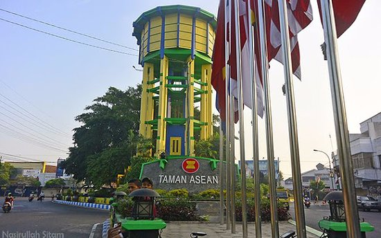

Jombang adalah sebuah kabupaten di Provinsi Jawa Timur yang dikenal dengan julukan Kota Santri karena banyaknya pondok pesantren ternama yang berdiri di wilayah ini. Selain menjadi pusat pendidikan agama Islam, Jombang juga memiliki sejarah panjang dalam perjuangan bangsa, salah satunya sebagai tempat lahirnya tokoh nasional seperti K.H. Hasyim Asy'ari, pendiri Nahdlatul Ulama. Kota ini memiliki suasana yang tenang dan asri, dengan perpaduan antara nuansa pedesaan serta perkembangan modern yang semakin pesat. Tidak hanya itu, Jombang juga terkenal dengan berbagai kuliner khas, keramahan masyarakatnya, serta lokasinya yang strategis di jalur utama yang menghubungkan Surabaya dan Madiun, sehingga menjadikannya daerah yang penting baik dari sisi budaya, pendidikan, maupun ekonomi.